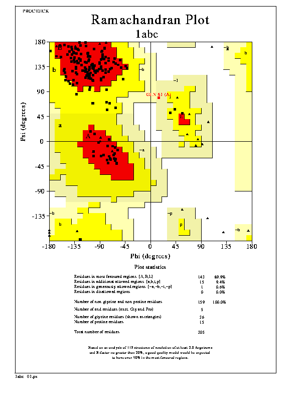

The Ramachandran plot shows the phi-psi torsion angles for all residues in the structure (except those at the chain termini). Glycine residues are separately identified by triangles as these are not restricted to the regions of the plot appropriate to the other sidechain types.
The colouring/shading on the plot represents the different regions (see below) described in Morris et al. (1992): the darkest areas (here shown in red) correspond to the "core" regions representing the most favourable combinations of phi-psi values.
Ideally, one would hope to have over 90% of the residues in these "core" regions. The percentage of residues in the "core" regions is one of the better guides to stereochemical quality.
The different regions on the Ramachandran plot are as described in Morris et al. (1992).
The regions are labelled as follows:
A - Core alpha L - Core left-handed alpha
a - Allowed alpha l - Allowed left-handed alpha
~a - Generous alpha ~l - Generous left-handed alpha
B - Core beta p - Allowed epsilon
b - Allowed beta ~p - Generous epsilon
~b - Generous beta
The different regions were taken from the observed phi-psi distribution for 121,870 residues from 463 known X-ray protein structures. The two most favoured regions are the "core" and "allowed" regions which correspond to 10° x 10° pixels having more than 100 and 8 residues in them, respectively. The "generous" regions were defined by Morris et al. (1992) by extending out by 20° (two pixels) all round the "allowed" regions. In fact, the authors found very few residues in these "generous" regions, so they can probably be treated much like the "disallowed" region and any residues in them investigated more closely.
Reference
|
|
Morris AL, MacArthur MW, Hutchinson EG, Thornton JM (1992). Stereochemical quality of protein structure coordinates. Proteins, 12, 345-364. |
|---|